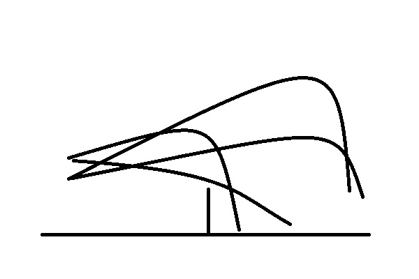

In badminton, it’s generalized that the two most important aspects are movement and shots. Shots in badminton are like what eating is to living. You need to eat to live, and you can choose what you eat. Shots are essential to badminton in this same way. So, let’s learn about shots.
A shot is exactly what you think it is: hitting the shuttlecock. And to be more precise, hitting the shuttlecock a certain way to a certain place in the court. Sounds simple, but considering the size of the court, weight of the racket, biomechanics, and properties of the shuttlecock, hitting a shot is quite cool. The size of the court is roughly 1-6 steps-length, so it’s not that big. This means that placing a good shot requires precision and/or speed. Then, notice that the racket is quite light. This means that you can use more levers in the body to impart power. Compared to tennis, badminton requires less stability in the wrist when hitting the shot because of the lighter racket and projectile. The trajectory of the shuttlecock is not the same as a ball. The shuttlecock has feathers which decelerates it significantly. The feathers also stabilize the shuttlecock when in flight and causes the shuttlecock to be able to tumble. All these factors contribute to the beauty and power of many types of shots in badminton.

Unique trajectory of badminton shots
So, what’s a good shot in badminton? It’s crisp. It’s tight. It’s fast. It’s precise. It’s powerful. It’s heavy. It’s tricky. There’re many different shots that are considered good. The best ways to gauge: difficulty for the opponent and position of the player. Choosing shots is one of the decisions in badminton. When the choice of shot is too difficult for opponents or places the player in a better position than the opponent, the player will likely win. Then, the skill of a player can be gauged by technical shot metrics: speed of shot, fluidity of stroke, tightness to net, precision of shuttlecock landing, trajectory type of shuttlecock.
We’ve many technical aspects to the shot, but don’t forget that a shot is still simply one hit to the shuttlecock. Use the metrics to gauge how good a shot is, but not as a method of how to do it. Do what the body is comfortable with and the shot will come with practice. Just remember that hitting a good shot is fun and impressive.